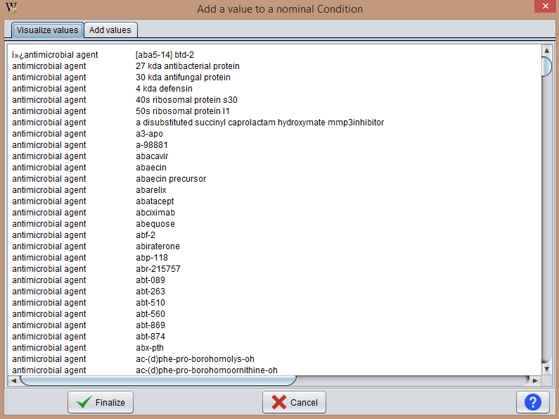
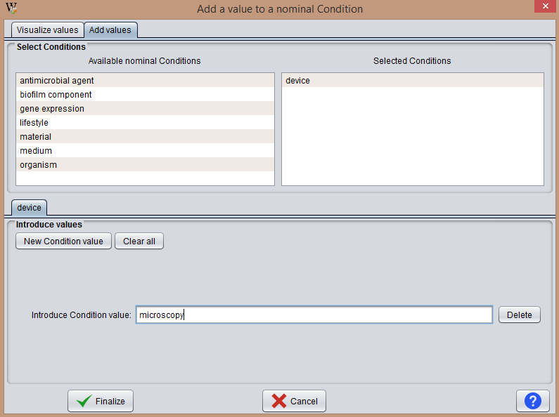

With this operation the user can add new condition values to nominal conditions. Once the user press the icon for this functionality, the program displays a window like the one shown below:

In the Select Conditions area the user should indicate the nominal conditions for which he wants to include new values. To do this, the user has to select the condition with the left mouse button from the left list to the list on the right.
The program creates as many tabs as selected conditions. Simply navigate among them and press the button New Condition value to create values wherever needed.
